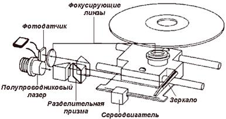
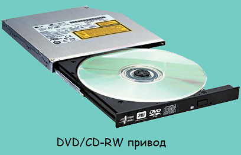

Привод оптических дисков — электромеханическое устройство для считывания и (в некоторых моделях) записи, посредством лазера, информации с оптических дисков (компакт-диск, DVD и т. п.). Разработанный компаниями Philips и Sony в конце 1970-х первоначально для чтения компакт-дисков. Сам по себе оптический привод может быть в виде составляющей конструкции в составе более сложного оборудования (например, бытового DVD-проигрывателя) либо выпускаться в виде независимого устройства со стандартным интерфейсом подключения (PATA, SATA, USB), например, для установки в компьютер.
В приводе компакт-дисков можно выделить несколько базовых элементов: лазерный диод, сервомотор, оптическую систему (включающую в себя расщепляющую призму) и фотодетектор.
Считывание информации с компакт-диска, так же как и запись, происходит при помощи лазерного луча. Поверхность оптического диска перемещается относительно лазерной головки с постоянной линейной скоростью, а угловая скорость меняется в зависимости от радиального положения головки. Таким образом, чтение внутренних дорожек осуществляется с увеличенным, а наружных - с уменьшенным числом оборотов. Именно этим обуславливается достаточно низкая скорость доступа к данным для компакт-дисков по сравнению, например, с винчестерами.
Сервомотор по команде от внутреннего микропроцессора привода перемещает отражающее зеркало. Это позволяет точно позиционировать лазерный луч на конкретную дорожку. Луч проникает сквозь защитный слой пластика и попадает на отражающий слой алюминия, серебра или золота на поверхности диска. При попадании его на выступ, он отражается на детектор и проходит через призму, отклоняющую его на светочувствительный диод.
Если луч попадает в ямку (пит), он рассеивается, и лишь малая часть излучения отражается обратно и доходит до светочувствительного диода. На диоде световые импульсы преобразуются в электрические; яркое излучение преобразуется в единицы, слабое – в нули. Таким образом ямки воспринимаются дисководом как логические нули, а гладкая поверхность как логические единицы.